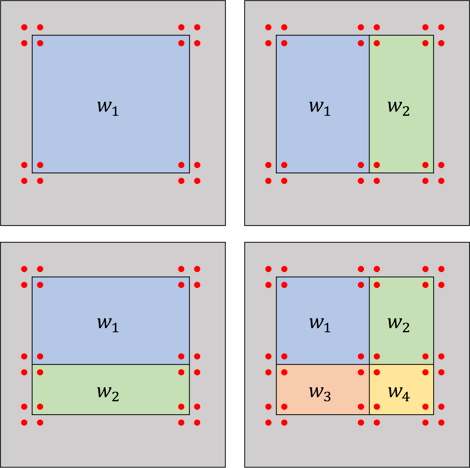
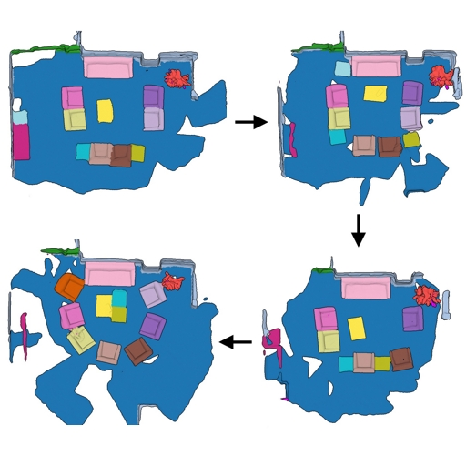
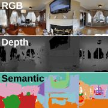
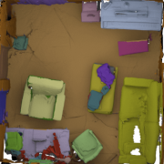
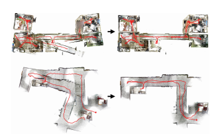
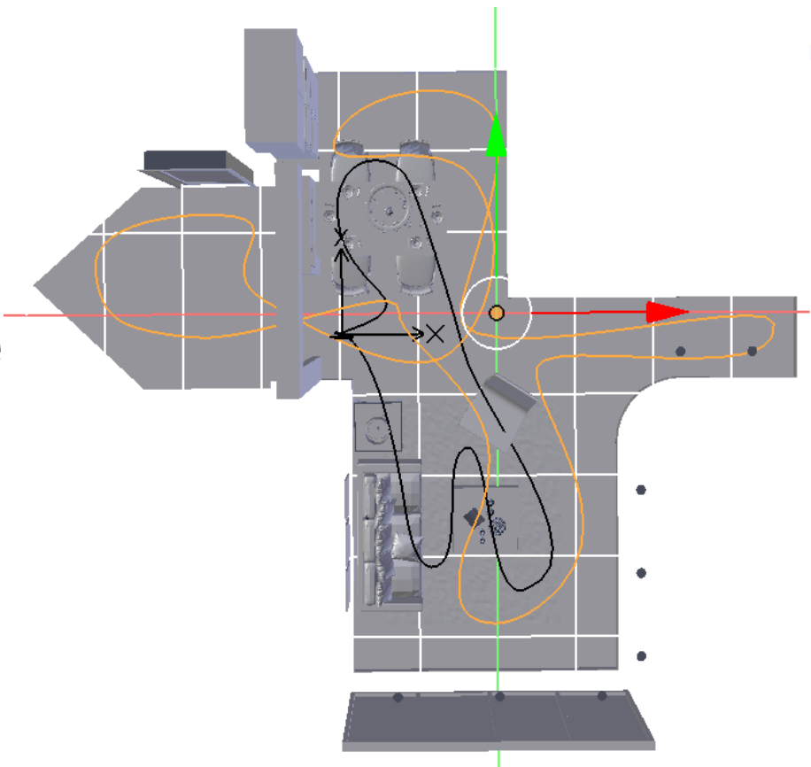
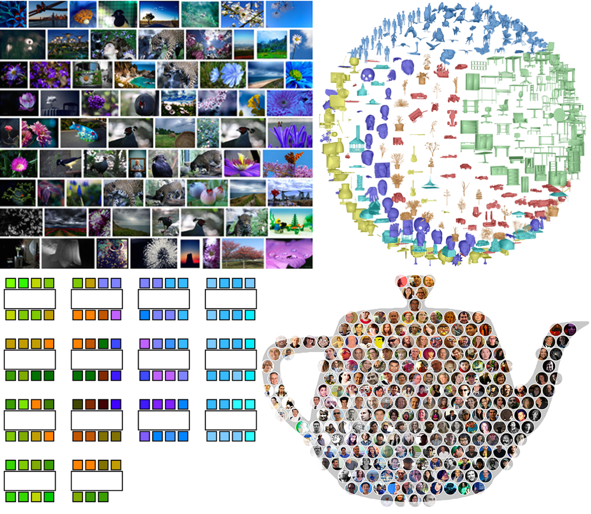
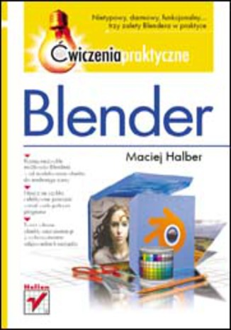

I have graduated from Princeton University, where I was a member of the Graphics and Vision groups, working with prof. Thomas Funkhouser. Off to new adventures now!
Prior to Princeton, I was studying at University College London, where I received Master of Engineering degree, working with prof. Simon Julier and prof. Niloy Mitra.
|  |
L.Zhang, M. Halber, S. Rusinkiewicz; Accelerating Large-Kernel Convolution Using Summed-Area Tables Under Review [preprint] |
|  |
M. Halber, Y.Shi, K. Xu, T.Funkhouser; Rescan: Inductive Instance Segmentation for Indoor RGBD Scans ICCV 2019 [pdf] [webpage] [code] |
|  |
A. X. Chang, A. Dai, T. Funkhouser, M. Halber, M. Nießner, M. Savva, S. Song, A. Zeng, Y. Zhang; Matterport3D: Learning from RGB-D Data in Indoor Environments 3DV 2017 [pdf] [webpage] |
|  |
A. Dai, A. X. Chang, M. Savva, M. Halber, T. Funkhouser, M. Nießner; ScanNet: Richly-annotated 3D Reconstructions of Indoor Scenes CVPR 2017 [pdf] [webpage] |
|  |
M. Halber, T. Funkhouser; Fine-To-Coarse Global Registration of RGB-D Scans CVPR 2017 [pdf][webpage][code] |
|
S. Berkiten, M. Halber, J. Solomon, C. Ma, H. Li, S. Rusinkiewicz; Learning Detail Transfer based on Geometric Features Eurographics 2017 Best Paper Award Honorable Mention [pdf] [webpage] |
|
|  |
E. Sizikova, V. K. Singh, B. Georgescu, M. Halber, K. Ma, T. Chen; Enhancing Place Recognition using Joint Intensity - Depth Analysis and Synthetic Data ECCV Workshop on Virtual/Augmented Reality for Visual Artificial Intelligence (VARVAI) 2016 [pdf] [poster] [webpage] |
|  |
O. Fried, S. DiVerdi, M. Halber, E. Sizikova and A. Finkelstein; IsoMatch: Creating Informative Grid Layouts Eurographics 2015 [pdf] [pdf-small] [video] |
|  |
M. Halber; Blender Poradnik Praktyczny ISBN 83-246-1190-8 |